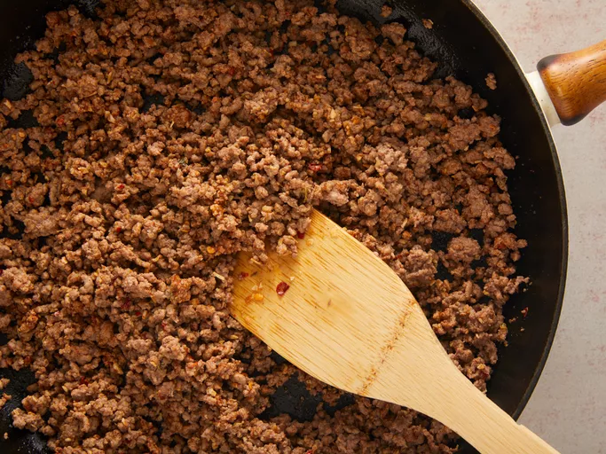

Ground Beef with Taco seasoning

The perfect ground beef taco recipe!
Taking just a little extra time to make homemade taco seasoning makes all the difference.
Ingredients
- 2 tbsp dried minced onion
- 1 tbsp salt
- 1 tbsp chili powder
<1i>0.5 tbsp cornstarch
- 0.5 tbsp ground cumin
- 0.25 tbsp dried minced garlic
- 0.25 tbsp dried oregano
- 1 pound ground beef
- 0.5 cup water
Steps
- Gather all ingreidents
- Mix minced onion, salt, chili powder, cornstarch, cumin, red pepper flakes, cayenne pepper, minced garlic, and oregano in a bowl
- Heat a large skillet over medium-high heat.
Cook and stir ground beef in the hot skillet until browned and crumbly, 7 to 10 minutes.
Drain and discard any excess grease.
-
Pour water and seasoning mix over beef; stir to combine.
Bring to a simmer and cook until mixture thickens slightly, about 5 minutes.